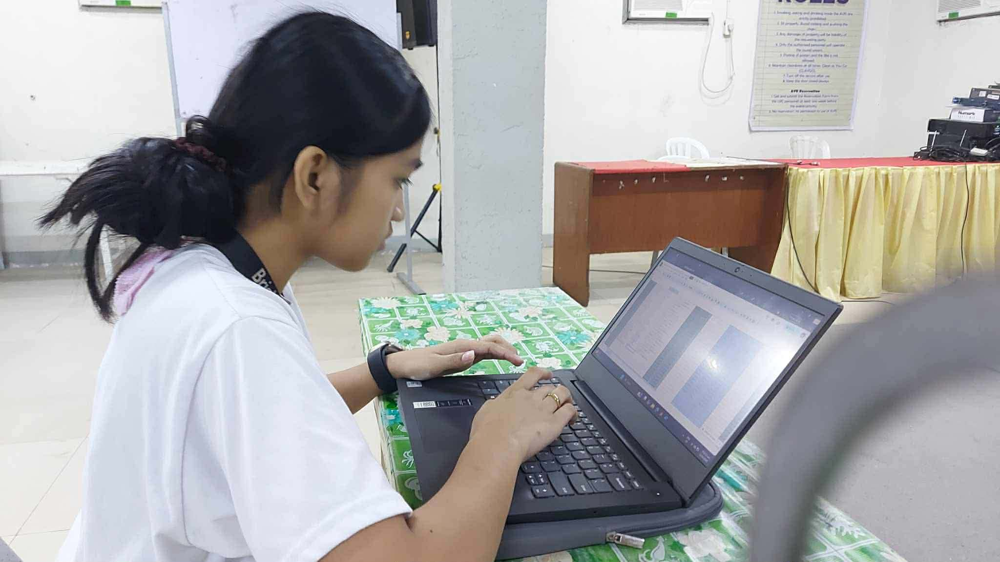
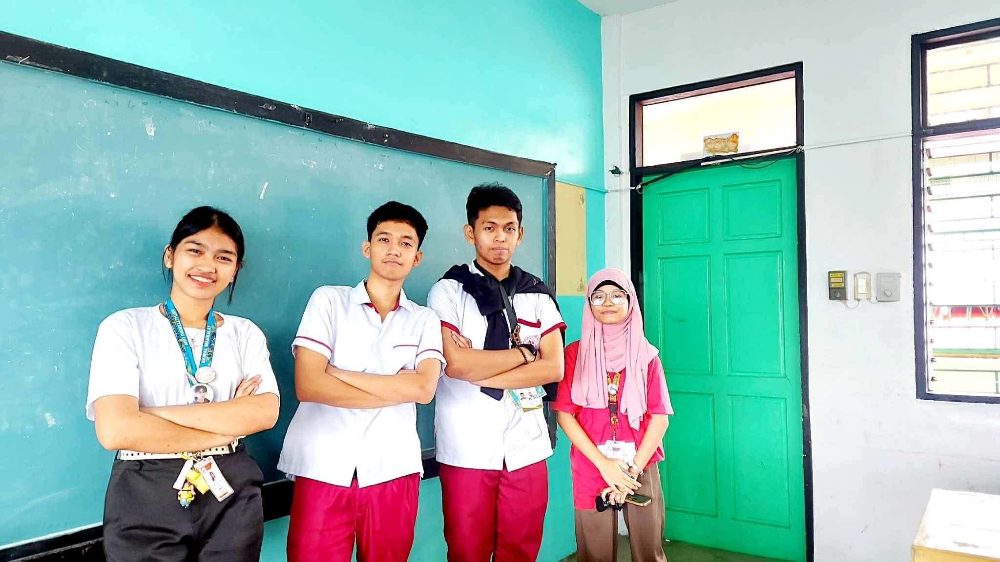
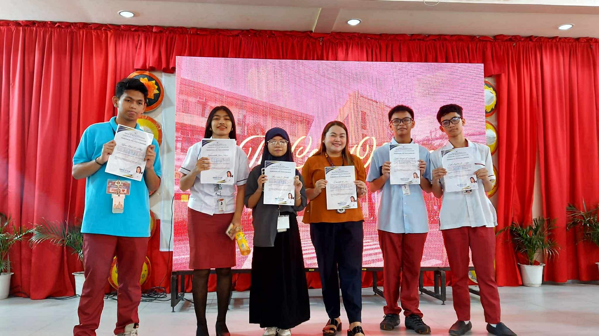

Culiat High School's iamtheCODE Journey
A journey of collaboration, teamwork, and empowerment.
A journey of collaboration, teamwork, and empowerment.
The IamtheCODE Journey is more than coding—it's a collective experience of learning, growth, and creativity. Along the way, we have overcome challenges, celebrated achievements, and realized the value of every step. We are deeply thankful to our mentors, peers, and supporters who have encouraged and believed in us. This journey has strengthened not only our skills but also our confidence and passion for technology. Thank you for being part of our story; together, we continue to innovate, create, and inspire.





The orientation session gathered students, and teachers to provide a clear overview of the program. Key objectives, expectations, and timelines were explained, helping all participants gain a well-defined understanding of what lies ahead.